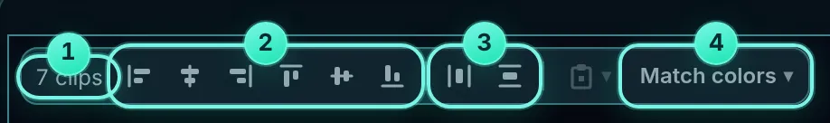
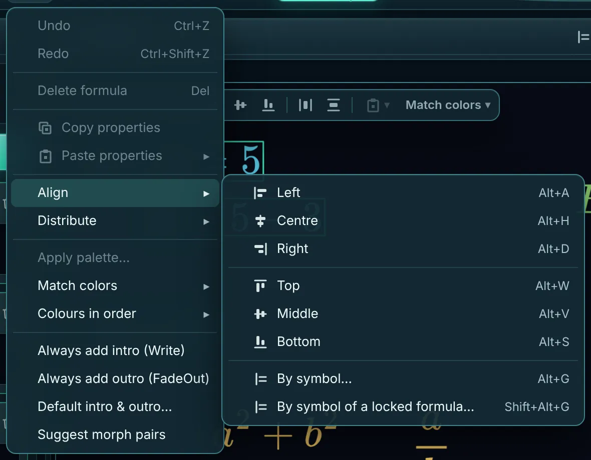
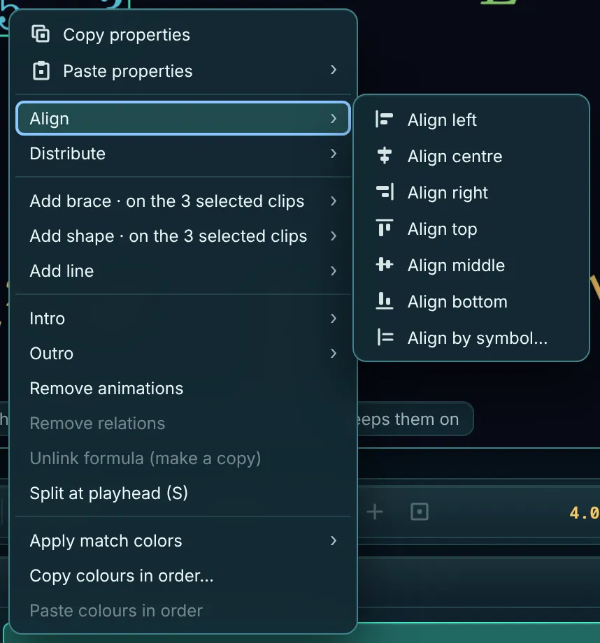
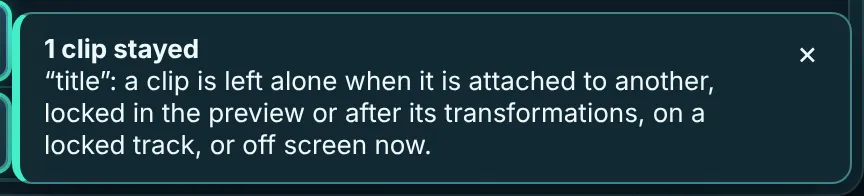

Align and distribute
Line up several things in the Preview, and space them evenly. Select them, press a key or a button, and the edges meet or the gaps become equal, in one undo step.
Where the commands are
The same eight commands are in four places. Pick the one that is closest to your hands.
- The bar in the Preview. With two or more clips selected, a bar appears in the top-left corner of the Preview.
- The Edit menu: Edit ▸ Align and Edit ▸ Distribute.
- The right-click menu of a formula in the Preview: Align ▸ and Distribute ▸.
- The keyboard (the table below).



| Command | Keys | With Shift: to the frame |
|---|---|---|
| Align left | Alt+A | Shift+Alt+A |
| Align centre | Alt+H | Shift+Alt+H |
| Align right | Alt+D | Shift+Alt+D |
| Align top | Alt+W | Shift+Alt+W |
| Align middle | Alt+V | Shift+Alt+V |
| Align bottom | Alt+S | Shift+Alt+S |
| Distribute horizontally | Ctrl+Alt+H | — |
| Distribute vertically | Ctrl+Alt+V | — |
The letters are chosen by where the keys are, not by the names of the commands: A and D for the left and right edges and W and S for top and bottom, as in the WASD keys of a game, and H and V for the horizontal and vertical middles. In the Edit menu, hold Shift while you choose an edge to align to the frame.
Align
Aligning moves each selected clip along one axis only, so that one of its edges, or its middle, meets the same edge or middle of the group. Which line of the group it is depends on the command:
| Command | The clips go to | They move |
|---|---|---|
| Left, Right | the leftmost left edge, the rightmost right edge | sideways |
| Centre | the vertical middle line of the group's box | sideways |
| Top, Bottom | the highest top, the lowest bottom | up or down |
| Middle | the horizontal middle line of the group's box | up or down |
What is measured is the whole formula: every glyph counts where it is at the playhead, drawn or not, so a formula with a hidden glyph still measures the same.
Each command is one undo step: Ctrl+Z puts back the last, then the one before. If every box is already in place, nothing moves and no undo step is made.
Aligning to the frame
A lone clip has nothing to line up with, so it aligns to the frame: Align centre puts it on the vertical middle line of the frame, Align left against the left edge of the frame, and so on. With Shift held, a selection of several clips aligns to the frame too: each clip goes to the frame's edge or middle, not to the group's.
For example, a lone clip with Alt+H goes to the middle of the frame, and two clips with Shift+Alt+A both go to the left edge of the frame.
In a scene with a camera, the frame is the camera’s at the playhead: what is seen at that instant.
Distribute
Distributing needs three or more clips. It leaves the two outermost ones where they are (by their centres, along the axis) and places the others so that the gaps between neighbouring boxes are all equal. Boxes that overlap give negative gaps, which are equalised too.
The distribute buttons of the bar stay off until three clips are selected. Distributing horizontally spaces them from left to right; distributing vertically, from top to bottom. For a row of three formulas, Alt+V puts their middles on one line and Ctrl+Alt+H spaces them out evenly.
What takes part
Align and distribute act on the selected clips that the Preview can edit right now. A clip takes part when it is
- on screen at the playhead;
- on a track that is not locked, and not locked in the preview (Locking a formula in the preview);
- not locked after its transformations (an edit at that time would belong to a transformation), and without the end state of one of its blocks under edit;
- placed by hand.
The last one matters for braces, shapes, labels and lines: an object attached to glyphs of a formula is placed by them, so it is neither measured nor moved. Selected together with the formula it hangs on, it goes where that formula goes. Selected without it, it stays.
The clips that stay are not a failure: a notice says how many, and names them.

Moving the aligned clips together
After aligning, the clips are still a selection. Drag any of them and they all move, and the box round the whole group is what snaps to the other formulas and to the frame, with the guides of dragging and snapping. Hold Shift for the handles of the group, which scale or turn all of them about the group's centre.
Try it
Open the start file, where seven formulas sit where someone placed them by eye.
This is the scene once it has been tidied: the lines left-aligned and evenly spaced, the row on one line with equal gaps, the title in the middle.
To line formulas up by one of their symbols — the equals signs of a derivation, say — see Align by symbol.